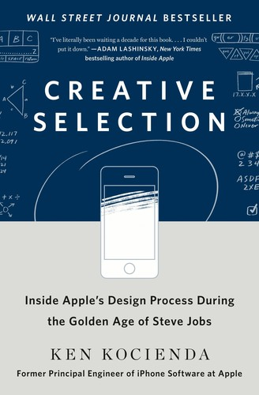

肯·科希恩达（Ken Kocienda）毕业于耶鲁大学，在辗转修摩托车、做报社图书馆员工、赴日本教英语、拍摄艺术摄影之后，偶然接触到互联网，凭借自学掌握了计算机编程技能。经历了一系列互联网创业公司的起伏之后，他于2001年加入苹果公司，此后在那里工作了整整十五年，先后主导了Safari浏览器、iPhone、iPad和Apple Watch的核心软件开发。其中最为人称道的成就是设计并实现了iPhone最初的触摸屏软键盘——这项工作要求他在软件逻辑、打字体验和自动纠错算法之间找到近乎完美的平衡。《创意选择》出版于2018年，是科希恩达对这段经历的第一手回顾，也是极少数真正出自苹果核心工程师之手的内部叙事。
本书最重要的贡献是提炼出苹果产品开发过程中的"创意选择"机制。科希恩达将这一机制比作达尔文进化论中的自然选择：每一个功能或设计方案，都必须通过向乔布斯及其他高层进行Demo演示的方式接受检验；优秀的方案得以保留和迭代，失败的方案被淘汰，由此形成了一种渐进式但方向明确的产品进化路径。他将苹果黄金时代的创新归纳为七个核心要素：灵感、协作、匠心、勤勉、果断、品味与同理心，并用自己经历的具体事件逐一阐释这些要素如何在真实的工作场景中发挥作用。书中对Demo文化的描写尤为深刻——在苹果，一个不能被演示的想法几乎不存在，因为只有通过可感知的原型，才能推动有意义的迭代对话。
书中多处记录了科希恩达与史蒂夫·乔布斯的直接互动，这些细节为理解乔布斯的产品哲学提供了难得的第一视角。乔布斯坚持"技术要极度先进，同时又要直观易用、令人愉悦"，这一看似简单的要求在实践中意味着工程师必须同时具备深刻的技术理解和高度的用户同理心——两者缺一不可。《华尔街日报》将本书列为畅销书，对苹果创新文化感兴趣的读者、产品经理以及研究设计流程的学者给予了一致好评，认为本书填补了外部观察者长期难以触及的"黑盒子"。
对于关注创新机制与产品文化的读者而言，《创意选择》提供的不是一套可以照搬的流程手册，而是一组关于"卓越如何诞生"的真实案例。科希恩达的写作坦诚而克制，既没有将苹果神话化，也没有回避产品开发中失败与迷茫的时刻。他所揭示的核心逻辑——优秀的产品来自无数次高质量的小决策积累，而非某个灵光一闪的天才时刻——对于任何试图在组织中构建真正的创新文化的人，都是一段值得细细品味的第一手证言。